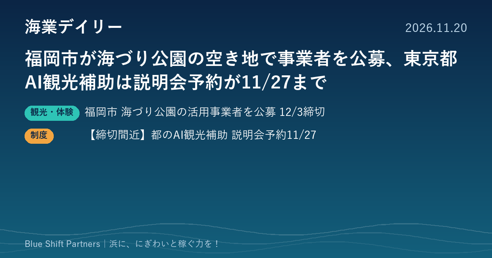

2026.11.20
福岡市が海づり公園の空き地で事業者を公募、東京都AI観光補助は説明会予約が11/27まで

福岡市は、海業の取組みの一環として、海づり公園の緑地部を活用する事業者を公募しています。参加表明の受付は11月27日から12月3日15時までです。東京都の観光地向けAI導入補助は、申請に必須の個別説明会の予約が11月27日までとなっています。
福岡市、海づり公園の緑地部を活用する事業者を公募（参加表明は11/27〜12/3 15時）
福岡市は、海業の取組みの一環として、施設の建替えを進めている福岡市海づり公園（西区）の空いた緑地部を活用する事業者を、公募型プロポーザル方式で募集しています。対象は北側緑地部（約2,086㎡）と南側緑地部（約2,363㎡）で、2つを一体的に活用する提案を求めています。参加表明と参加資格審査の申請は11月27日から12月3日15時まで、提案書は2027年1月29日から2月4日まで受け付け、優先交渉権者は3月16日に決定・公表する予定です。北側と南側の一部は事業用定期借地として貸し付け、南側のうち国有の公共空地の部分は、漁港法にもとづく漁港施設等活用事業の制度で占用を認める計画です。参加資格や貸付の条件は公募要綱で確認する必要があります。
ここがポイント：釣り以外の来園者も楽しめる場づくりを活用の方向性の一つに掲げ、公園の空き地を民間の力で活かそうとする事例です。昭和60年開園の釣り公園で、指定管理者は福岡市漁協です。釣り施設を核に、海辺の景観や地元の水産物を活かした賑わいづくりを考える自治体・漁協にとって、公募の組み立て方の参考になります。
出典：福岡市 農林水産局水産部（海業推進）「福岡市海づり公園緑地部等活用事業の事業者公募について」（2026-10-23）
【締切間近】東京都「AI等先端技術を活用した受入環境高度化支援事業」、必須の個別説明会の予約は11月27日まで
東京都は、2者以上の都内事業者のグループが、エリア単位で連携して観光地の高付加価値化にAIなどの先端技術を導入する取組みを補助しています。補助率は2分の1以内、上限は4,000万円で、採択は2件の予定です。対象経費は機械設備の導入費、システム等の導入経費、専門家の指導費です。申請には個別説明会への参加が必須で、予約の締切は11月27日、申請は12月11日必着（LoGoフォームまたは簡易書留）です。
ここがポイント：都内の島しょや臨海部で、漁港・直売所・体験事業者・宿泊施設がグループを組み、混雑の見える化やキャッシュレス・チケットレスの仕組みを入れる場合の財源の候補になり得ます（対象になるかは募集要領での確認が必要です）。説明会の予約を逃すと申請できないため、検討中の事業者は先に予約だけでも済ませておくと安心です。
出典：東京都 産業労働局 観光部受入環境課「AI等先端技術を活用した受入環境高度化支援事業」（2026-11-04）
福岡市の海づり公園の公募は、釣りという「来る理由」がすでにある場所に、食や滞在の楽しみを足して、漁港の空き地を稼ぐ場所に変える試みです。釣りに来た人が、帰りに食事や買い物、体験も楽しめれば、浜に落ちるお金が増えます。自分の浜の釣り場や防波堤のまわりに、同じように使える空き地がないか見直してみてはいかがでしょうか。